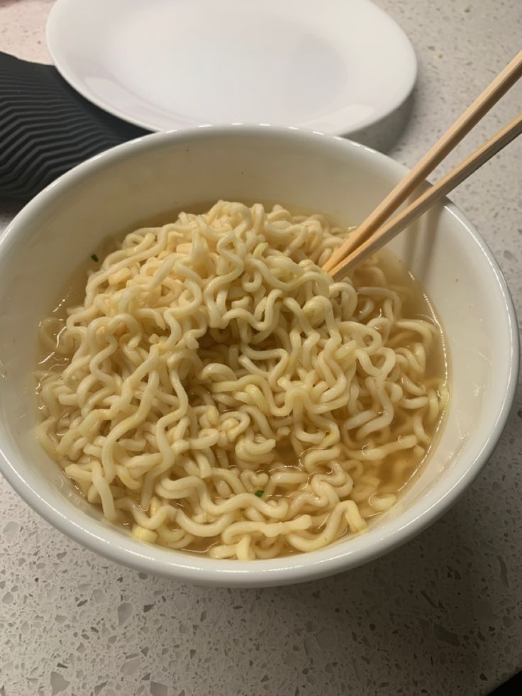

My Girfriend's Secret Instant Noodles Recipe

Ingredients
- 1 packet of instant noodles (any flavor)
- 2 cups of water
- Seasoning packet (included with the noodles)
- Teaspoon of Olive Oil
Steps
- In a small pot, bring 2 cups of water to a boil over medium heat.
- Add the instant noodles to the boiling water. Cook for 2-3 minutes, stirring occasionally to separate the noodles.
- Turn off the heat. Pour the seasoning packet into the pot and stir well to combine.
- Very important!!! add the olive oil and ejoy!
index